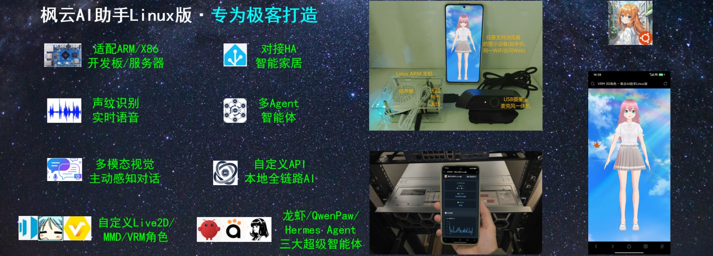
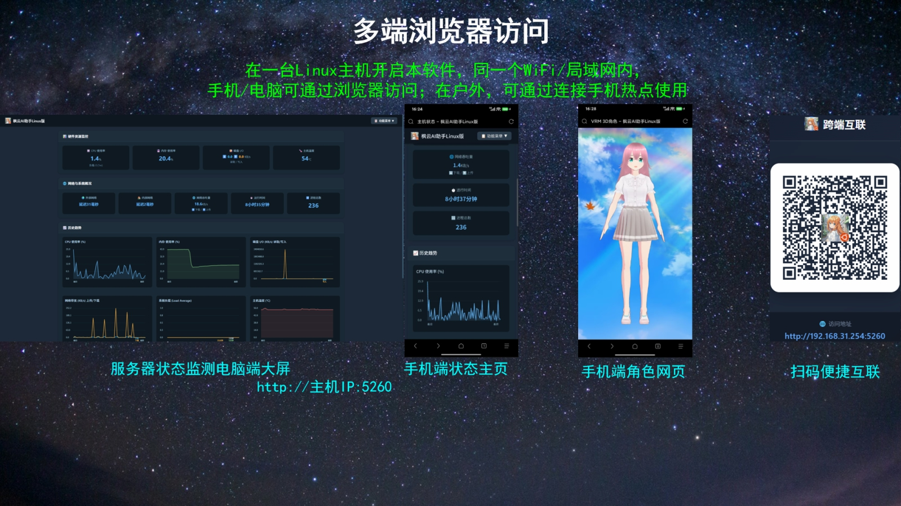
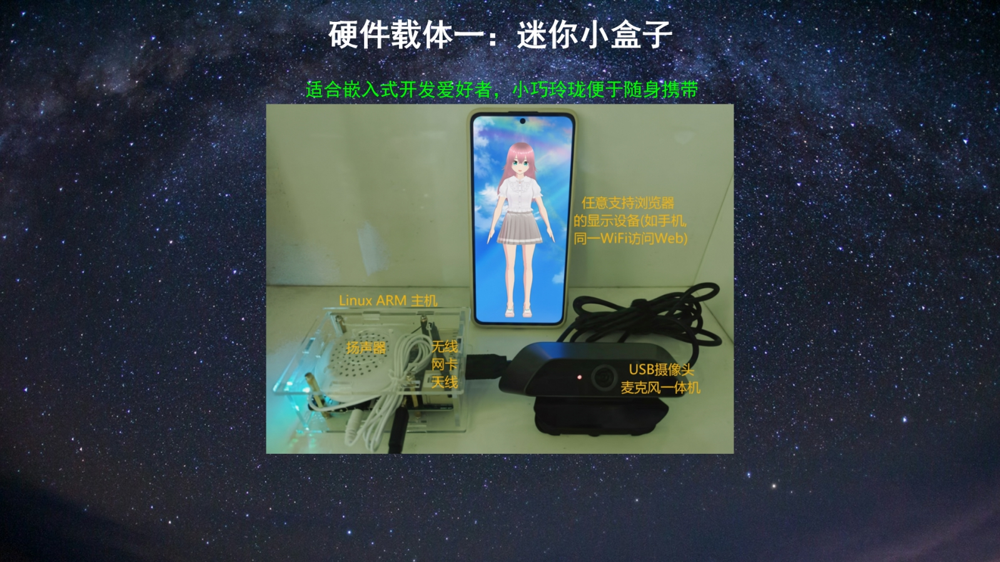
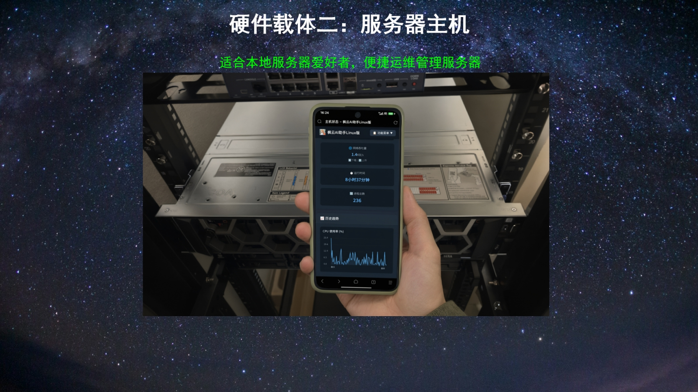

概览
枫云AI助手Linux版专为 Linux 极客打造，把二次元 AI 助手装进 ARM / X86 开发板、迷你主机或服务器。主机负责推理与调度，局域网内的任意设备通过浏览器访问，让 AI 助手不再被某一块屏幕束缚。
v4.3 在语音交互、虚拟形象与智能体能力上进一步完善：你可以用声纹让助手只回应特定用户，用 Live2D / MMD / VRM 角色展示情绪与动作，也可以把系统命令、智能家居与即时通讯交给超级智能体协同完成。

下载与文档
提供自带模型的整合包，解压后按文档配置即可运行。若需要更强的模型能力，可搭配本地或局域网 AI 引擎。
硬件提示：整合包适配 ARM / X86 平台，具体依赖与启动方式以使用说明文档为准。若使用 RK3588 / RK3576 等 NPU 平台，可搭配 RKLLM 框架获得硬件加速。
功能特性
01
全平台访问Linux 主机运行后，局域网内电脑、手机、平板均可通过浏览器访问，无需安装客户端。
02
多种交互方式支持文字（Web）、语音（实时 / 唤醒词）、图像（摄像头）输入，输出包含文字、语音合成与虚拟形象动画。
03
丰富的 AI 生态对接云端（OpenAI 兼容等）及本地 / 局域网（llama.cpp、KoboldCpp、vLLM、LM Studio、Dify 等）大语言模型框架、视觉模型与语音合成引擎。
04
多智能体与超级智能体内置联网搜索、天气、新闻、智能家居控制、系统命令执行等智能体，并可接入 OpenClaw、QwenPaw、Hermes Agent 三大超级智能体框架。
05
IM 机器人接入支持飞书、钉钉、QQ 机器人，与即时通讯软件无缝集成，让助手走出浏览器。
06
虚拟形象展示支持 Live2D 2D 角色、MMD 3D 角色与 VRM 3D 角色，自动口型同步与互动动画。
07
主机状态监控实时查看 CPU、内存、温度、进程、网络带宽与系统负载等历史趋势图表。
08
专注模式内置番茄钟与背景音，可添加任务清单，让 AI 助手陪你一起保持专注。
09
放松模式内置 9 种空间音效沉浸白噪音（春风、海滩、森林、溪流、夏夜、雨天等），支持定时停止。
界面预览



更新日志
- v4.3新增：对接三大超级智能体、IM 机器人、系统命令执行智能体、专注 / 放松模式。
- v3.0新增：VRM 3D 角色展示、音频事件检测、流式语音合成。
- v2.0新增：主动感知对话引擎、RKLLM 生态。
- v1.0枫云AI助手Linux版 · 开源发布。
本项目为开源免费的绿色软件，宗旨是让每个人都可便捷地使用并 DIY 属于自己的随身 AI 助手硬件并享受其乐趣。让我们共同打造更棒的 AI 助手 Linux 版。